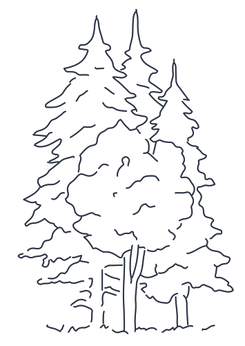

Thoreau's
Spyglass
Spyglass
Thoreau preferred to observe nature
with the naked eye,
not through a lens.
It was after much internal debate
that
he decided to spend $8.00
--a rare splurge--
on this spyglass in the spring of 1854. He was del with his enhanced ability to study bird behaviors and other natural phenomena.
--a rare splurge--
on this spyglass in the spring of 1854. He was del with his enhanced ability to study bird behaviors and other natural phenomena.

Explore:
1